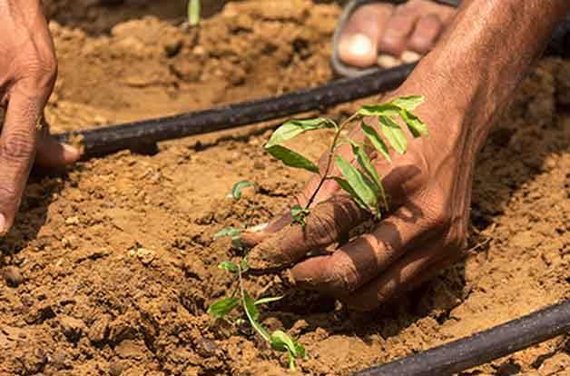

GREEN PROMISE
자연을 생각하고 고객을 생각하는 이니스프리의 착한 이야기 이니스프리는 매년 그린 프라미스를 공개하여 자연과 고객에 대한 진심을 전하고 있습니다.
이니스프리 숲을 가꾸어
자연의 가치를 보존해 나가겠습니다.
(누계 식수량 12만 4,700그루)
*글로벌 숲 캠페인 기준
자연 유래 원료를 함유한
스킨케어 제품을 만들겠습니다.
연간판매 수익금 일부를
자연과 이웃을 위해 기부하겠습니다.
(국내 누계 기부금 99억원)
*국내 현금기부금 기준
(제품 기부, 글로벌 현지 캠페인
기부 미포함)
2010~2018년 누계 기준
청정 제주 곶자왈 지키기
제주 곶자왈은 한반도 최대 규모의 상록수림 지대로 ‘제주의 허파’라고 불리며 제주 생태계에 중요한 역할을 하는 곳입니다.
곶자왈은 제주 생태계의 보고이자 한반도 최대 상록수림 지대로 제주의 지하수 함양에도 중요한 역할을 하는 청정 유산입니다. 이니스프리는 난개발로 점점 사라져가는 제주 곶자왈을 보호하기 위해 매년 이니스프리 남성 라인인 “포레스트 포맨” 판매 수익금의 일부를 제주 곶자왈 공유화 재단에 기부하고 있습니다.이니스프리의 기부금은 사유화 된 곶자왈을 매입하여 공유 재산화 함으로 곶자왈이 개인에 의해 무분별하게 개발되는 것을 방지하는데 보탬이 되고 있습니다.
내몽고 나무 심기
이니스프리는 중국 내몽고 지역의 사방화 방지를 막기 위해 2012년부터 내몽고 나무 심기 캠페인을 시작해 왔습니다.
한 해 동안 모은 금액으로 이니스프리의 직원과 고객들 그리고 NGO 단체인 ‘뿌리와 새싹’과 함께 그린원정대를 꾸려 중국 내몽고 쿠룬치 사막 지역에 매년 1만 그루의 나무를 심고 있습니다.
앞으로도 이니스프리 숲을 위한 지속적인 관리와 보존 활동을 펼칠 예정입니다.
글로벌 브랜드로
나아가는 이니스프리는 내몽고에 백만 그루 나무를 심는 그날까지 ‘내몽고 나무 심기’ 프로젝트를 지속적으로 실천할 계획입니다.
태국 맹그로브 나무심기
맹그로브는 일반 나무들과는 달리 바다와 육지가 만나는 지점에서 자라며, 그 뿌리가 바닷속 10m까지 내려가 자리를 잡아 토양유실을 예방하기도 하고, 해양생물들의 산란장소, 은신처 역할을 하는 나무입니다.
이니스프리는 해양생태계 유지를 위해 2016년 태국 맹그로브 숲 캠페인을 진행하였습니다. 태국 현지 고객들과 함께 3천그루의 맹그로브 나무를 심어 바다 생태계의 중요성을 알리고 바다숲의 기능을 유지하는데
노력하였습니다. 이를 기반으로 이니스프리는 앞으로도 아세안 국가의 바다숲 보존 활동을 확대해 나갈 예정입니다.
대만 타이마리 해변 나무 심기
대만의 남동쪽, 드넓게 펼쳐진 타이마리 해변은 매년 태풍과 거센 북동 계절풍이 불어 범람에 의한 해안가 유실이 잦은 지역입니다.
이니스프리는 해안가 보호 활동을 위해 2017년 ‘Taitung Forest District Office’와 함께 이니스프리 숲을 조성했습니다. 매년 1만 그루의 나무를 심어 해안가 보호 활동에 앞장설 것입니다.
말레이시아 이탄습지 나무 심기
말레이시아 라자 뮤사 숲의 이탄 습지 위에 이니스프리 숲이 들어섰습니다.
이탄 습지란 죽은 식물들이 분해되지 않은 채 켜켜이 쌓여 만들어진 퇴적층을 말합니다.
생태 연구 측면에서 중요성을 지니기도 하지만 기온이 올라 수분이 증발하면 퇴적물의 이산화탄소가 공기 중에 그대로 방출되는 치명점을 안고 있기도 합니다.
이니스프리는 2017년부터 이탄습지의 온실가스 배출량 줄이기 위해 건강한 습지 및
숲 조성 활동을 펼쳤습니다.
매년 600그루의 나무를 심으며 습지의 중요성을 알리고 지구 온난화 방지에 기여하기 위한 활동을 지속적으로 펼쳐나갈 계획입니다.
미국 클래머스 국유림 나무 심기
미국 캘리포니아 주에 위치한 클래머스 국유림은 2013년~2017년 사이 여러 차례 발생한 복합 화재로 인해 황폐화를 겪었습니다.
2018년 6월, 이니스프리는 미국 최대의 나무 심기 비영리 단체인 아버데이 재단(Arbor Day Foundation)과 함께 이니스프리 숲을 조성했습니다. 매년 5천 그루의 나무를 심어 산림과 생태계 복원에 기여할 예정입니다.
인도 반수르 지역 나무 심기
반수르 지역은 높은 기온과 건조한 기후 탓에 조림이 어려운 지역입니다. 2018년에 시작한 인도 이니스프리 숲 캠페인은 숲 조성과 더불어 인근 농가의 삶의 질 향상에도 크게 기여할 예정입니다. ‘Sankalp Taru’ NGO와 함께 매년 1천 그루의 나무를 심고 있습니다.
인도네시아 보고르 지역 나무 심기
자연경관이 아름다우며 ‘비의 도시’라고도 불리는 보고르는 우기에 홍수 피해가 잦은 지역입니다.
토양의 물 저장 능력을 키우고 홍수를 예방하기 위해 2018년에 이니스프리 숲이 조성되었습니다.
‘WWF Indonesia’단체와 함께 매년 6천 그루의 나무를 심을 예정입니다.
2011
그린원정대가 처음 결성된 해, 이니스프리 직원들은 제주의 대표적 지질 명소 중 하나인 수월봉 아래 집결하여, 해안가의 해양쓰레기와 폐목재 수거 활동을 진행했습니다.
2012
‘제주올레 걷기축제’기간에 맞춰 제주 올레길을 깨끗이 하는 활동을 진행했습니다. 특히 ‘제주 오름을 지키자’는 미션 아래 새별오름을 청소하며 클린제주 캠페인 활동에 의미를 더했습니다.
2013
이니스프리 전 사원이 두 달에 걸쳐 제주 각지의 문화 유산 경관을 정비하고 홍보하는 봉사활동을 펼쳤습니다.
2014
제주 올레길 구간 중 망장포와 바당올레길 일대의 무너진 바위와 돌을 재정비하고 해안가를 청소했습니다. 또한 제주 곶자왈을 탐방하며 제주 자연의 가치를 되새겼습니다.
2015
그린원정대는 나눔 활동에 초점을 맞추어 일손이 필요한 제주의 이웃들에게 직접 찾아가 농가 일손을 돕는 등의 자원 봉사를 진행하였습니다.
2016
이니스프리 직원과 대학생 봉사자들이 함께 제주도내 오름 2곳의 폐타이어 매트를 친환경 야자매트로 교체하고 표지판을 새로 설치했습니다.
2017
‘제주다우미’봉사활동을 주최하여 이니스프리 직원과 경영주, 대학생, 제주도민이 함께 제주오름 5곳의 통행로를 정비하고, 동반 에티켓 홍보영상을 제작하는 등 제주오름 가치보전에 앞장 섰습니다.
2018
‘제주다우미’ 봉사활동을 통해 제주오름 2곳의 탐방로를 정비하고, 초등학생 자녀가 있는 제주도민 대상 ‘오름캠프’를 진행하여 오름의 가치와 특징을 이해하는 시간을 가졌습니다.
2019
‘제주다우미’ 봉사활동을 통해, 제주 오름 2곳의 탐방로를 정비했으며, 제주시와 ‘500만 그루 나무심기 협약식’을 체결하고 삼무공원 등 도시 숲 가꾸기 활동을 진행 했습니다. 또한 제주도내 10개 초등학교에서 자원과 환경에 대한 올바른 인식을 심어주기 위한 ‘새활용 창의교실’을 운영했습니다.
2018. 마음과 마음을 담아 행복을 가득 채우다
2018년은 레트로 무드 가득한 리미티드 에디션과 “그린크리스마스 DIY삭스 키트”를 선보였습니다. 산타를 기다리던 순수한 어린시절로 돌아가 트리에 양말을 매달면 도움이 필요한 친구들에게 선물이 찾아가는 동화같은 이야기를 담았습니다.키트 판매금의 일부는 세이브더칠드런에 기부해 국내 청소년 교복 지원사업에 사용되었습니다.
2017. 마음과 마음을 잇다
2017년은 한층 다양해진 리미티드 에디션 제품과 "그린 크리스마스 DIY 스트링 아트 키트"가 함께했습니다. 지그재그 실을 이어 완성하는 스트링 아트를 통해, 작은 즐거움이 누군가에게 따뜻함으로 연결되어 모두가 행복한 크리스마스가 되기를 바라는 마음을 담았습니다. 키트 판매금의 일부는 세이브더칠드런에 기부되어, 위탁아동의 초기정착 지원사업에 사용되었습니다.
2016. 마음이 울리다, 행복이 퍼지다
2016년은 "그린 크리스마스 DIY 뮤직박스"를 리미티드 에디션과 함께 선보였습니다. 나무 조립판을 직접 조립하고 원하는 대로 색칠해서 만드는 DIY 뮤직박스는 우드통에서 행복한 캐럴이 울려퍼져 마음까지 따뜻하게 합니다. DIY 키트 판매금 일부는 세이브더칠드런을 통해 청각장애 아동의 치료와 교육을 돕는 데에 쓰였습니다.
2015. 마음을 쌓다, 행복을 나누다
2015년 그린 크리스마스는 크리스마스의 풍경을 담은 리미티드 에디션과 함께, 따뜻한 마음을 쌓아 큰 행복을 완성하는 "그린 크리스마스 DIY 블럭 키트"를 선보였습니다. DIY 블럭 판매금의 일부는 세이브더칠드런의 '놀이터를 지켜라' 캠페인에 전달되어 강원도 영월 지역 아이들에게 마음껏 뛰어 놀 수 있는 따뜻한 놀이터를 만들어주었습니다.
2014. 만들다, 즐기다, 나누다!
2014년 그린 크리스마스는 연말 시즌이 무언가를 만들고, 즐기고, 나누는 기쁨의 시간이 될 수 있도록 '내가 만드는 소소한 즐거움을 누군가의 따뜻함으로 나누는' 그린 크리스마스 오너먼트 DIY 키트를 제작하였습니다. 사랑하는 사람들과 함께 한 땀 한 땀 크리스마스 오너먼트를 완성하는 과정으로 만드는 즐거움을 느낄 수 있으며, DIY키트 판매금은 세이브더칠드런에 기부됨으로써 나눔의 따뜻함을 느낄 수 있었습니다.
2013. 크리스마스엔 산타가 되세요
2013년 그린 크리스마스 캠페인은 'You are the Santa' 온라인 이벤트를 함께 진행해 더 많은 고객이 쉽게 기부에 동참할 수 있도록 하였습니다. 'You are the Santa'는 아이들의 천진난만한 소원이 담긴 영상을 자신의 SNS에 공유해 이니스프리의 특별한 산타클로스가 될 수 있으며, 영상을 공유한 산타클로스의 수만큼 아이들의 소원도 이루어지는 이벤트였습니다.
2012. 사랑과 감사의 마음을 향기로 전하세요!
리미티드 에디션을 구입하면 제품당 5백 원씩 국내외 단체를 통해 저소득층 아동들에게 기부되어 의미가 있을 뿐 아니라 전 제품 구입시 은은한 향이 발산되는 사쉐 카드를 증정해 사랑과 감사의 마음을 특별하게 전달할 수 있도록 했습니다. 또 어린이들에게 모금액을 전달할 때 그들에게 꼭 필요한 1년치 바디 용품을 전달하는 행사도 함께 하였습니다.
2011. 양말 밴드와 함께 따듯한 크리스마스를 전하세요
'더 크리스마스 판타지'라 명한 2011년 그린 크리스마스 캠페인에는 다양한 홍보 활동으로 고객의 참여를 독려했습니다. 그린 크리스마스 캠페인을 기념해 이니스프리 모델 윤아가 결성한 양말 밴드가 매장에서 기습적으로 벌인 '양말 밴드 공연'은 동영상이 공개된지 하루 만에 2만 건의 조회수를 기록하는 등 온라인에서 화제가 됐으며, 그린 크리스마스 취지를 알리고 고객과 공감하는 좋은 계기가 되었습니다. 그린 크리스마스 리미티드 에디션은 별도 포장이 필요 없는 친환경 선물 패키지로 제작되어 더욱 의미가 있었습니다. 구매한 고객 수만큼 5백 원의 금액이 더해져서 양말 3천 켤레와 함께 이웃의 따뜻한 크리스마스에 도움이 되었습니다.